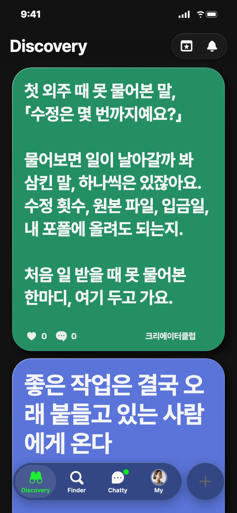
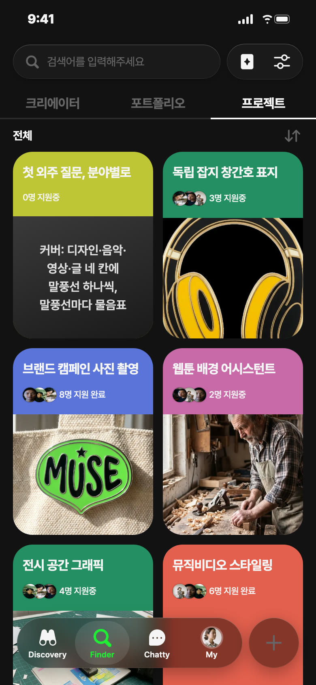
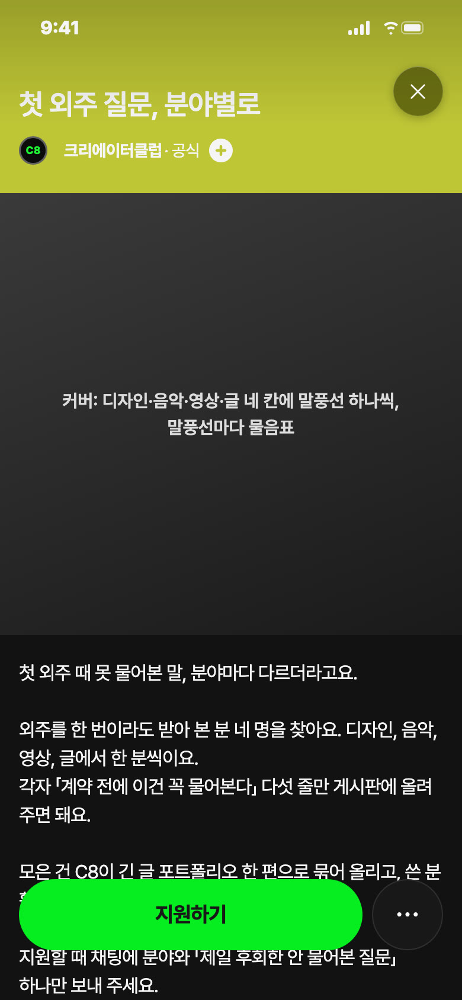
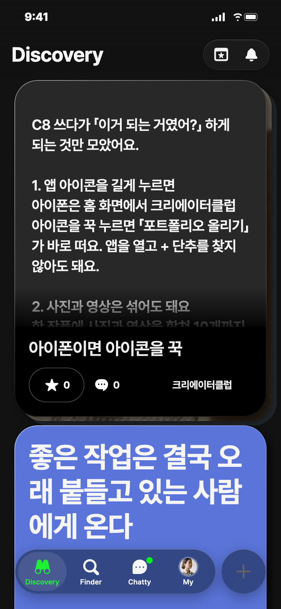
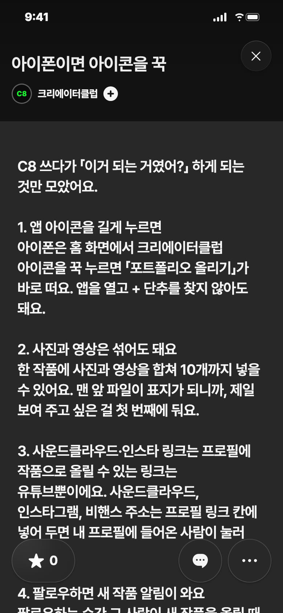

C8 앱 게시 시안 · 11/2(월) — 오늘 추천: 영감 · 낮 12시
오늘 추천 · 영감 · 오늘 낮 12시 · 초록

왜 오늘: 월요일 점심, 한 주 일을 받기 시작하는 날이에요
보낼 사람: 첫 외주를 앞둔 후배에게 「이거 보고 가」
받고 싶은 댓글: 「원본 파일 주냐고 못 물어봐서 PSD까지 다 넘겼어요」
영감 글
첫 외주 때 못 물어본 말, 「수정은 몇 번까지예요?」 물어보면 일이 날아갈까 봐 삼킨 말, 하나씩은 있잖아요. 수정 횟수, 원본 파일, 입금일, 내 포폴에 올려도 되는지. 처음 일 받을 때 못 물어본 한마디, 여기 두고 가요. 다음 사람은 물어볼 수 있게요. #첫외주
비축 · 프로젝트 · 노랑


칸: 함께 만들기 × 쓸모
왜 비축: 오늘 영감 댓글이 모인 뒤에 열면 좋고, 마감(제안값 11/15 일)·보상이 정해져야 올려요
보낼 사람: 외주 몇 번 해 본 친구에게 「너 이거 할 말 많잖아」
받고 싶은 지원 채팅: 「영상이요. 원본 넘기는 조건 안 물어봐서 두 번 당했어요」
제목
첫 외주 질문, 분야별로
카테고리
함께 만들기 · 일 받기
모집 내용
외주를 한 번이라도 받아 본 분 4명(디자인·음악·영상·글 한 분씩) · 각자 「계약 전에 꼭 물어볼 것」 다섯 줄을 프로젝트 게시판에 올리기 · C8이 긴 글 포트폴리오 한 편으로 묶어 올리고 쓴 분 활동명을 함께 적어요
설명
첫 외주 때 못 물어본 말, 분야마다 다르더라고요. 외주를 한 번이라도 받아 본 분 네 명을 찾아요. 디자인, 음악, 영상, 글에서 한 분씩이요. 각자 「계약 전에 이건 꼭 물어본다」 다섯 줄만 게시판에 올려 주면 돼요. 모은 건 C8이 긴 글 포트폴리오 한 편으로 묶어 올리고, 쓴 분 활동명을 같이 적어요. 지원할 때 채팅에 분야와 「제일 후회한 안 물어본 질문」 하나만 보내 주세요.
비축 · 포트폴리오 · 파랑


칸: 앱 소개 × 쓸모
언제: 다음 화요일 11/3 낮 12시 후보
보낼 사람: C8 막 가입한 친구에게 「이거 보면 덜 헤매」
받고 싶은 댓글: 「인스타 링크 작품으로 올리려다 안 돼서 포기했었는데 프로필이었네요」
제목
아이폰이면 아이콘을 꾹
긴 글 본문
C8 쓰다가 「이거 되는 거였어?」 하게 되는 것만 모았어요. 1. 앱 아이콘을 길게 누르면 아이폰은 홈 화면에서 크리에이터클럽 아이콘을 꾹 누르면 「포트폴리오 올리기」가 바로 떠요. 앱을 열고 + 단추를 찾지 않아도 돼요. 2. 사진과 영상은 섞어도 돼요 한 작품에 사진과 영상을 합쳐 10개까지 넣을 수 있어요. 맨 앞 파일이 표지가 되니까, 제일 보여 주고 싶은 걸 첫 번째에 둬요. 3. 사운드클라우드·인스타 링크는 프로필에 작품으로 올릴 수 있는 링크는 유튜브뿐이에요. 사운드클라우드, 인스타그램, 비핸스 주소는 프로필 링크 칸에 넣어 두면 내 프로필에 들어온 사람이 눌러 봐요. 4. 팔로우하면 새 작품 알림이 와요 팔로우하는 순간 그 사람이 새 작품을 올릴 때 알림이 자동으로 켜져요. 작업이 궁금한 사람은 팔로우만 해 두면 놓치지 않아요. 써 보다가 「이거 되는 거였어?」 했던 것도 댓글로 남겨 줘요. #C8사용법
설명
C8 쓰다가 「이거 되는 거였어?」 하게 되는 것만 모았어요.